SALOONS & GAMBLING HALLS.
19th Century
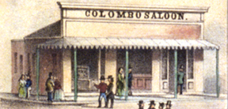
© Bancroft Library.
Colombo Saloon - c1855

Note: Most "Saloons" listed may not have been drinking and gambling houses. The word saloon comes from the French word "salon"
and in the mid 1800s would apply to most businesses that wished to imply a grand hall with fine fixtures, where folk could socialize.
Considering the name, i.e. Billiard Saloon, Barber Saloon, etc. you can sort out the establishments that did not serve spirits.
1850 "After arriving in town (Columbia), we stopped before a Hotel as it was termed. But it
might properly been called a Gambling House, as Gambling was carried on in the highest degree." - David B. Hackman, A Pennsylvania Mennonite and the California Gold Rush.*
1850-55 Bassett's Saloon (South of Pioneer Emporium lot).
1851-53 Ferguson's Liquor Store (Pioneer Emporium lot) .
1851 Patterson House Saloon with owners Henry Dawson and John D. Patterson. The saloon was a wood frame building located on the lot known as SODERER & MARSHALL, North.(Justice Court 2010)
1852-54 Captain Raspal's Billiard Saloon (San Francisco Store lot).
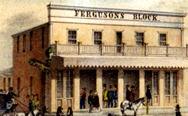
© Bancroft Library.
Ferguson's Saloon - 1855
1852-57 Ferguson's Saloon (Pioneer Emporium).
1852 Italian Saloon. Located on State & Main Streets (southeast corner) this lot had a wood structure owned by Luigi Mariet.
© Bancroft Library.
Colombo Saloon - 1855
1853 July 3 - "in Columbia, some of the large houses are going to serve up great dinners at four dollars a head and in the evening they are going to have a fancy ball which will cost ten dollars for admission".These places are principally patternised(sic) only by gamblers and other fast men and women of the place. On these occasions there is always a great excitement and considerable fighting going on." - David B. Hackman A Pennsylvania Mennonite and the California Gold Rush.*
1853-57 Colombo Saloon (so. corner of State & Main).
1853 Doutremont Saloon (Location unsure - Possibly French Quarter north of Jackson Street).
1853-57 H. K. White's Billiard Saloon (Candy Kitchen).
1853 "The Spaniards and Mexicans go in for dancing houses or `Fandangoes', as they are called, but these are tolerable rough places." -David B. Hackman A Pennsylvania Mennonite and the California Gold Rush.*
1854-55 Barclay's Saloon AKA Lone Star/Martha's Saloon (California Store lot).
1854 English Ale & Porter House (Location unsure).
1854-57 Morgan's House (City Hotel).
1854-57 Raney's Saloon
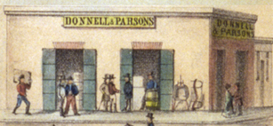
© Bancroft Library.
Donnell & Parson's Saloon - 1855
1855-66 Donnell & Parson's Saloon (Location south of blue wagon).
1855 Koch Saloon (Location unsure - name implies the Barber; however he arrives 10+ years later).
1855 Kossuth Saloon (Fancy Dry Goods).
1855-57 Martha's Place was renamed, Lone Star Saloon & Coffee House (California Store lot).
c1850's Mrs. McGrain owner of the McGrain's Saloon on Broadway. (Not sure of location)
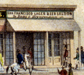
© Bancroft Library.
Heynemann's Lager Beer Saloon - 1855
1855-61 Haag & (Louis) Heynemann's Lager Beer Saloon AKA San Francisco Lager Beer saloon. (Brown's Coffee & Sweets Saloon).
1855-today What Cheer Saloon. Part of the Morgan House. (City Hotel) 1857 it is called What Cheer House Saloon.
1856-58 High Society Saloon (Mercantile basement). AKA Fire Proof Vault saloon
1856 E. J. Parrott Saloon (Location unsure).
1856 B. Harvey Saloon (Location unsure).
1856 Charles (Chas.) De La Royere's Wine & Liquor Store (Location unsure - possibly French Quarter, north of Jackson Street).
1856 Columbia Lager Beer & Bowling Saloon (Location unsure).
1856 F. Weyer Saloon (Location unsure).
1856-58 Gus. Sturzenegger and Newman's saloon. (Wells, Fargo location and/or at the Columbia House location)
1856 Hanson's Saloon (just south of California Store/Franco barn).
1856-65 Hoerchner Saloon (Location unsure).
1856-60 J. H. Ward Saloon AKA Ward's Drinking Saloon (Location unsure).
1856 Jos. Mavro Saloon (Location unsure).
1856 L. D. Loring Saloon (Location unsure).
1856 Lager Beer Saloon (Location unsure).
1856 M. J. Keating Saloon (Location unsure).
1856 Pioneer Saloon (Location unsure).
1856-58 Rospei German Hall (Location unsure
1856-65 Schultz' German Hall (Location unsure).
1856-71 St. Charles's Saloon. AKA Charles Ream's Saloon or Reim's St Charles Saloon.
1856 T. H. Lineker Saloon (Location unsure).
1856 W. H. Warren Bowling Saloon (Location unsure).
1857 Brazee's Hall (Location unsure).
1857-69 Jack B. Douglass Saloon on the corner of Fulton and Main Streets.
1857-60 Farnsworth's Saloon.
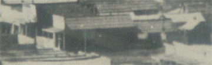
© Webmaster's collection.
Long Tom Saloon location (looking south at Jackson and Main Streets) - 1866
1857-65 Long Tom saloon (just north of California Store/Franco).
1857 Loraine's Fandango.
1857 October 27 - Mariquita Martines from Chile and Josefa Rojas a 30 yr. old Chilean purchased for $800 the south half of the lot known as Loraine's Fandango from Adolphe Loraine and Santo Gonzales. It was 25 feet wide and 100 feet deep. The lot was bare (from August fire?) and the women had a structure built whithin the next year. (Deeds Vol. 7 page 23)(Eastman Vol. 9 page 97)
1857 August - Morgan's What Cheer House Saloon.
1857 Oppenheimer and Rehm oyster parlor and saloon (Brown's Coffee & Sweets Saloon).
1857 Saloon & Oyster Parlor.
1858 Darling's Oyster Saloon.
1858 French Saloon.
1858-59 Kellerman's Ten Pin Alley.
1858 Lager Beer Saloon (just south of California Store/Franco barn) .
1858 Charles Rehm's Saloon. (St. Charles)
1858 Bill Rainey's Gambling House. (Location unsure).
1858 Magnolia Saloon.
1858 June 24 - Mariquita Martines and Josefa Rojas divide the property (Marquita's Fancy Saloon) "selling" to each other for $1 each, signing the deeds with an "X" (Deeds Vol. 8 page 321) (Deeds Vol. 7 page 598) (Eastman Vol. 9 page 109)
1858-71 Marquita's Fancy Saloon. AKA House of Marquita. (Located North of Jackson and Southwest of Main St.)
1858 Mexican Saloon.
1858 Oppenheimer Saloon (Brown's Coffee & Sweets Saloon) .
1858 Oyster Saloon.
1858 Shilling's Beer Garden.
1858 Terpsichorean Hall Saloon (east of Masonic Hall) .
1858 Vassallo's Saloon.
1859 Seibert, Bakery and Coffee saloon (just south of California Store/Franco barn).
1859 Donahue's Saloon .
1859 Donshoe's Saloon.
1859-65 Manning's Saloon (Not sure of location).
1859 Oyster & Coffee Saloon, Rehm's (St.Charles saloon) .
1859 Slaven's Saloon.
1860 June 1 - Mariquita Martines and Margareta Moscoso (30 yr old from Chile) buys a parcel of land from Henry Smith that is on the west side of Main Street, above Jackson Street for $157.50. It is 25 feet in front and 110 feet deep. (Deeds Vol. 10 page 164) (Eastman Vol.9 page 138) Willie Minor 28 yr. old female from Jamaica is listed as a barkeeper living with Josfa Rojas in 1860 census.
1860 Hauk's Saloon.
1860-65 Merrill's Saloon.
1861 Fordham's Saloon.
1861 Rehm's St. Charles Saloon.
1861-68 Frederick's Saloon.
1861 Madame Pike's Saloon.
1861 P. G. Ferguson's Wholesale Liquor Store.
1861 Podesta's Saloon.
1864 Gunn's Saloon.
1865 Kline's What Cheer & Coffee Saloon .
1865 Kordmeyer & Snyder's Saloon (Hildenbrand bldg).
1865 Siebert's Saloon.
1865-71 St. Charles Saloon.
1865-68 Wheelock's Saloon?
1866 Questai Fandango House.
1867 Leavitt-Walker saloon.
1870 Edmund Parson's Saloon.
1870 Henry Kluber Saloon (Columbia House).
1870 McGowan's saloon (St. Charles Saloon).
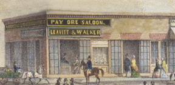
© Webmaster's collection.
Pay Ore Saloon - 1871
1871 Pay Ore Saloon (Towle-Leavitt).
1876-78 O. F. Strubridge's Empire Saloon (Franklin Wolfe)
1879 Eagle Restaurant & Billiard Saloon (Towle-Leavitt).
1880 Big Tree Saloon (Towle-Leavitt).
1880 David Levy's Dividend Saloon (Franklin Wolfe).
1880 Henkleman's Saloon (Bottom of Duchow Building/Drug Store).
1886 Gunn Saloon (Ice Cream Parlor).
1887 Rehm Billiard Saloon and Wine Hall (St.Charles saloon).
1889 Siebert's Saloon (Jack Douglass Saloon).
1891 Kruse saloon (Columbia House).
1898 Court Exchange Saloon, The (Bottom of Duchow Building/Drug Store).
1898 Pitt's & Carder's Blue Wing Saloon (Bottom of Duchow Building/Drug Store).
1898 Wild Horse Saloon, The (Bottom of Duchow Building/Drug Store).
1899 Pay Ore Saloon (Towle-Leavitt).
SALOONS.
20th Century
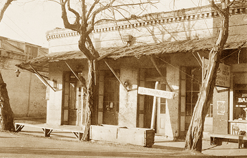
© Columbia State Historic Park.
Stage Driver's Retreat - 1934-8
1900 Model Saloon. (James Carder owner?)
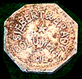
© Columbia State Historic Park.
American Saloon Token - c1902.
1902 American Saloon (Jack Douglass).
1906 Dec. 20 - St. Charles Saloon deeded to James and Mata Carder.
1910 St. Charles Saloon called The Peerless Saloon operated by Carder and Rodden.
1930 Stage Driver's Retreat (Jack Douglass Saloon).
1968-today Jack Douglass Saloon, The.
1910 Peerless Saloon (St. Charles).
1912 Solari Saloon.
1930 St. Charles saloon.
1935 Carlo's Pioneer Saloon (St. Charles saloon).
1947 Pioneer Saloon (St. Charles saloon).
1961-68 Pioneer Saloon (St. Charles).
1968 Building restored. Name changed to St. Charles Saloon. The concession is
temporarily (15mos) housed at Questai building on State Street.
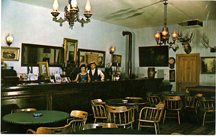
© Webmaster's Collection.
Inside the newly renovated St. Charles Saloon - 1969
1900-today What Cheer Saloon.
2013-2015 St. Charles Saloon changed to The Bixel Brewery.
2016 St. Charles Saloon is back.
May 2020 What Cheer Saloon is closed by state.
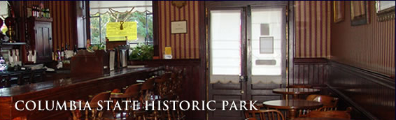
© Forever Resorts
Inside the What Cheer Saloon - 2008

* A Pennsylvania Mennonite and the California Gold Rush as written by David Baer Hackman from 1850 to 1855 and Lawrence Berger-Knorr 2008
NOTE: Most "Saloons" listed may not have been drinking and gambling houses.
The word saloon in the mid 1800s would apply to most businesses
that wished to imply a grand hall with fine fixtures.
Also the list is not a complete one and may have errors.
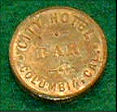
© Columbia State Historic Park.
City Hotel Bar Token - c1890s.
This page is created for the benefit of the public by
Floyd D.P. Øydegaard
Email contact:
fdpoyde3 (at) yahoo (dot) com
A WORK IN PROGRESS,
created for the visitors to the Columbia State Historic park.
© Columbia State Historic Park & Floyd D. P. Øydegaard.